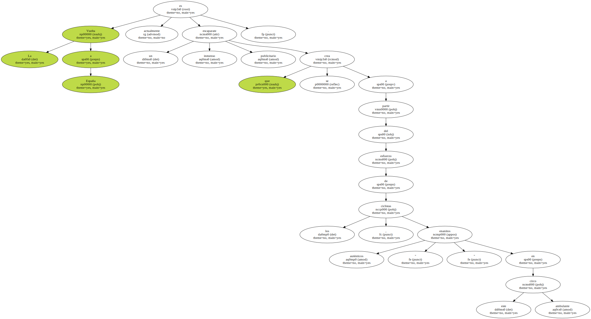
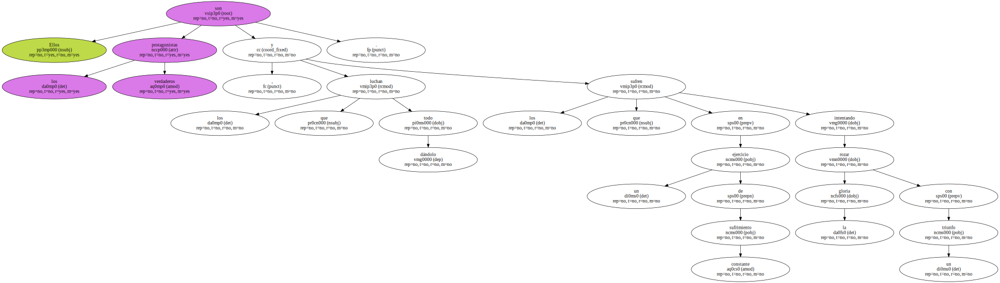
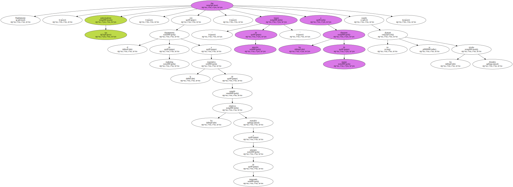
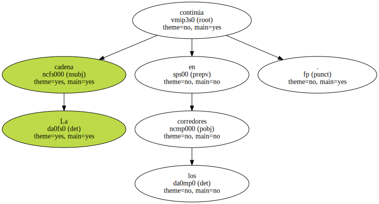
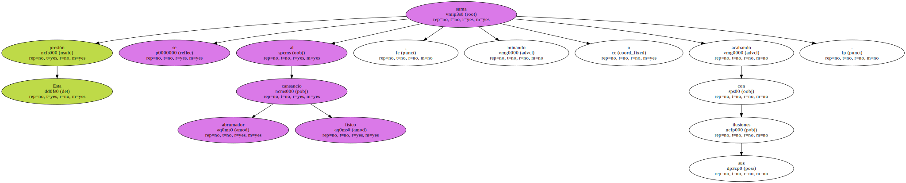
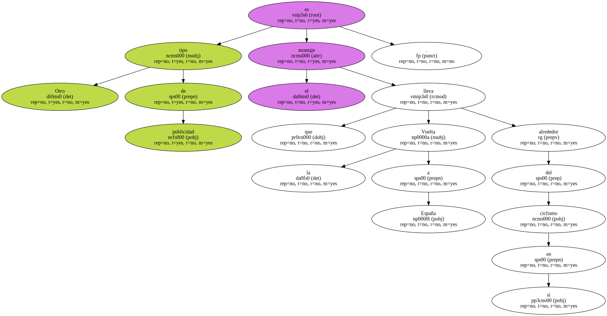
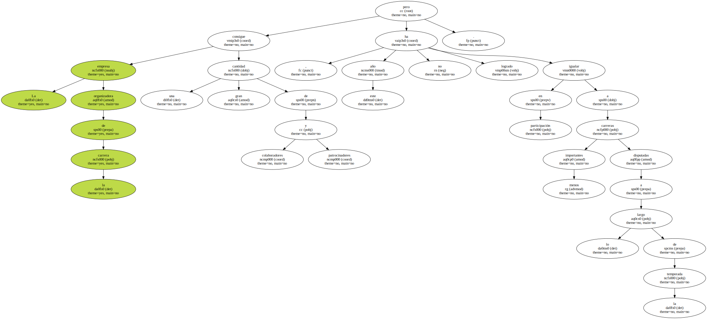
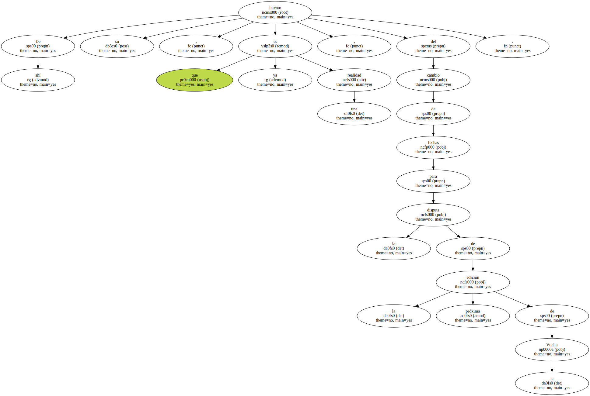
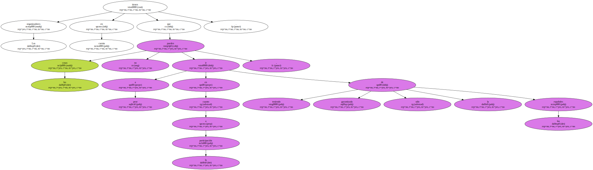

La Vuelta a España es actualmente un inmenso escaparate publicitario que se crea a partir del esfuerzo de los ciclistas , auténticos " enanitos " en este circo ambulante.
Ellos son los verdaderos protagonistas , los que luchan dándolo todo y los que sufren en un ejercicio de sufrimiento constante intentando rozar la gloria con un triunfo.
Paralelamente , sus patrocinadores , con el departamento de marketing a la expectativa de cumplir los objetivos marcados a principio de temporada , dan " toques de atención " a los directores de equipo cuando no se alcanzan los niveles deseados.
La cadena continúa en los corredores.
El director deportivo transmite inmediatamente el " mensaje " a sus ciclistas como si de un conducto reglamentario se tratase - muchas veces en el momento menos adecuado - , y éstos se desmoralizan más aún si cabe por no haber cumplido con su misión en la carrera.

Esta presión se suma al abrumador cansancio físico , minando o acabando con sus ilusiones.
Los corredores llegan a dudar a menudo si el mundillo en el que están inmersos es un deporte o si se trata únicamente de un anuncio publicitario.

Otro tipo de publicidad es el montaje que la Vuelta a España lleva alrededor del ciclismo en sí.
La empresa organizadora de la carrera consigue una gran cantidad de colaboradores y patrocinadores , pero este año no ha logrado igualar en participación a carreras menos importantes disputadas a lo largo de la temporada.
De ahí su intento , que ya es una realidad , del cambio de fechas para la disputa de la próxima edición de la Vuelta.
Los organizadores tienen en cuenta que las cosas no pueden ir a peor en cuanto a la participación , teniendo garantizada sólo la de los españoles.
